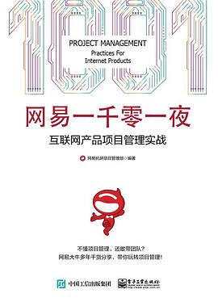

《网易一千零一夜：互联网产品项目管理实战》

总体观点
《网易一千零一夜》是中国互联网大厂敏捷研发管理领域少有的接地气力作。网易杭州研究院项目管理专家团队打破了照搬西方Scrum理论导致的教条僵化，将网易十余年孵化网易云音乐、网易严选、网易有道等一系列口碑爆款产品的实操真经，凝练为一百零一个生动鲜活的项目管理微故事与方法论。
全书以“敏捷不仅是一套流程，更是一种追求快速交付高价值业务的工程师文化”为立论根本。全面系统拆解了“双周敏捷迭代火车”、用户故事地图（Story Mapping）、实体物理看板与电子看板双轨驱动、以及基于DevOps自动化测试流水线的质量保障机制。它不仅回答了互联网团队如何应对瞬息万变的用户需求，更为传统行业进行数字化转型与敏捷落地提供了第一流的本土化实战范本。
核心观点
-
1. 敏捷迭代火车：用固定节奏战胜不确定性
互联网需求千变万化，如果等所有需求想透才开发必然错失风口；采用固定双周发版“研发火车机制”，到点必须发车，没做完的需求搭乘下一趟列车。
网易云音乐早期团队坚持双周迭代，哪怕某一版本只上一个小优化也准时发布更新，培养了整个团队极强的节奏感与发布肌肉记忆。 -
2. 用户故事地图：以用户旅程统摄需求全局图景
单纯把需求写成杂乱的Excel列表会导致团队只见树木不见森林；通过横向用户行为骨架与纵向版本切片，帮助所有人看清最小可行产品（MVP）。
网易严选在搭建购物车模块时，全员在会议室墙上贴满便利贴构建Story Mapping，一眼识别出“下单支付”是骨干核心，砍掉复杂的优惠券叠加功能优先上线。 -
3. 可视化看板工程：让研发流动瓶颈无所遁形
软件开发最大的浪费是“看不见的等待与在制品（WIP）积压”；通过限制在制品数量（WIP Limit）的物理看板，让代码审查和测试堵塞在几分钟内被全员看见。
当看板上的“待测试”列便利贴超过五张触发红色报警，开发工程师自觉停下新需求编写，主动协助测试工程师进行用例验证，打通流动瓶颈。 -
4. 灰度发布与持续集成：技术赋能敏捷高质量
敏捷绝不等于牺牲质量赶进度；必须依托强大的自动化测试用例集、持续交付流水线与百分之一增量灰度发布机制，实现日均十次部署依然系统稳如泰山。
新功能上线先对1%的用户开放灰度验证，后台实时监控Crash率和业务转化率指标，一旦异常一键毫秒级秒级回滚，用户毫无感知。 -
5. 真诚的回顾会议：敏捷团队持续进化的真正引擎
敏捷回顾会（Retrospective）绝不能沦为相互指责或走过场的形式主义；必须营造心理安全感，坚持“对事不对人，每次只聚焦解决一到两个最痛问题”。
团队在回顾会上采用“航行之船”模型复盘，找出“产品需求文档变更未通知前端”这一暗礁，落地“需求变更必须在群内@所有人并更新在线文档”的铁律。
全书结构
-
第一夜至第二夜：敏捷之道与网易研发火车模型
互联网产品研发生态特征；传统瀑布模型在互联网环境下的水土不服；网易敏捷研发生命周期与“双周迭代火车”核心机制运作规范。
详析网易杭研如何通过固化发版周期，彻底终结了“业务方无休止插单、研发熬夜通宵猝死”的恶性互撕死锁。 -
第三夜至第四夜：需求工程与敏捷估算工作坊
如何编写高质量的INVEST原则用户故事；用户故事地图（Story Mapping）实操指南；敏捷估算扑克（Planning Poker）与斐波那契数列点数对齐。
展示产品经理、开发与测试团队如何用扑克牌打出点数分歧，在半小时深度对齐中发现原本被忽略的三大隐藏技术架构陷阱。 -
第五夜至第六夜：看板方法与每日站立会的精髓
精益看板设计：从待办、开发中、代码审查、测试中到已发布；WIP限制的作用；开好十五分钟每日站立会的黄金三问与反模式规避。
纠正站会中“向项目经理汇报个人进度”的错误形态，引导团队成员站着面对看板“围绕卡片的流动状态开展自主协同”。 -
第七夜至第八夜：工程效能与DevOps持续交付体系
代码分支管理策略（GitFlow与主干开发）；自动化测试金字塔（单元测试、接口测试与UI测试配比）；全自动CI/CD流水线与发布无缝灰度控制。
展示网易有道词典如何通过构建云端自动化测试机房，在每天凌晨自动并发跑完数千条手机真机测试用例并输出健康度报告。 -
第九夜至第十夜：敏捷团队文化、效能度量与组织变革
敏捷教练的角色定位；如何度量研发效能（交付周期Lead Time、吞吐量Throughput、线上Bug逃逸率）；网易敏捷成熟度模型与终身进化宣言。
剖析盲目拿“代码行数”或“提测Bug数”作为考核指标对团队文化的毁灭性打击，提倡以最终商业交付价值作为唯一标尺的健康度量体系。